引言：監督式學習的終章——評估、案例、未標籤資料
▼一句話
第 10 章是監督式學習的收尾：分類器已經設計好了，接下來要評估它會錯多少、用一個醫學影像案例把前面各階段串起來，最後再讓未標籤資料進場。
是什麼
前面幾章多半在講「怎麼設計分類器」：產生特徵、挑選特徵、訓練決策規則。這一章假設最佳分類器已經用一組訓練特徵向量設計完成，接著要回答三個新問題：
- 誤差評估：用有限的測試資料，估計這套系統的分類錯誤機率。若估計結果夠好，才會把系統放到真實環境裡做完整評估，例如醫院裡的診斷系統、工廠裡的生產系統。
- 醫學超音波影像案例：把特徵產生、特徵選擇、分類器設計與系統評估串成一個完整流程，讓讀者看到電腦輔助診斷系統是怎麼做出來的。
- 未標籤資料與半監督學習：前面整本書幾乎都假設每筆資料都有標籤；這一章後半允許沒有標籤的資料進場。當有標籤的樣本很少時，未標籤資料有時能提供額外資訊，半監督學習也因此成為近年熱門題目。
為什麼
評估不是設計流程結束後才臨時加的附件，它本身就是設計的一部分。估出來的錯誤率會告訴你：這套系統有沒有達到應用規格。若沒達到，設計者就得回頭改前面的階段，例如換特徵、換分類器、或重新蒐集資料。
錯誤率還有第二種用途：它可以當特徵選擇階段的表現指標，用來判斷「對這個分類器來說，哪一組特徵比較好」。所以「評估」會回頭影響「選特徵」，兩個階段是連在一起的。
怎麼用 / 怎麼記
可以把第 10 章記成三個目的、一個回圈：
- 先估錯：用有限資料估計分類錯誤機率。
- 再串流程：用醫學影像案例複習「特徵 → 選擇 → 分類器 → 評估」整條鏈。
- 最後放寬監督：允許未標籤資料進來，認識半監督學習的基本想法。
回圈是：估計誤差 → 對照規格 → 不合格就回頭改設計。評估過關，才進真實場域做完整測試。
原文第 10.1 節指出，本章作為監督式學習終章，主要有哪三個目的？
關於「評估階段」在分類系統設計中的角色，下列哪一項最符合原文？
計錯法：二項式、MLE 與誤差估計的不偏性
▼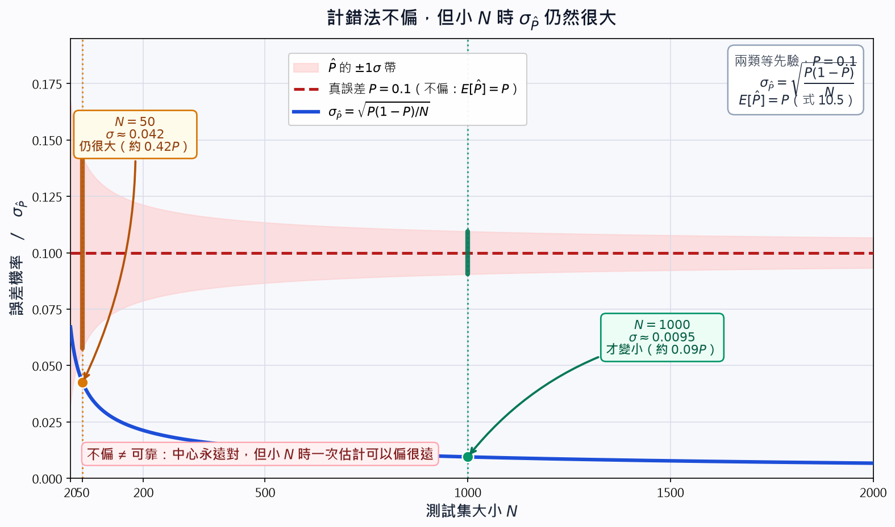
🤖 AI 生圖可用：重繪此示意圖的提示詞（結構化）
WHAT: 計錯法誤差估計的「不偏但不可靠」示意圖。兩類等先驗、真誤差 P=0.1 時，畫 σ_P̂=√(P(1-P)/N) 對 N=20…2000 的曲線，並用 P±σ 帶對照水平線「真誤差 P=0.1」。標出 N=50（σ≈0.042 仍很大）與 N=1000（σ≈0.0095 才小）。 WHY: 遮住文字仍看得出因果與反直覺：估計的中心永遠釘在真誤差（不偏），但小測試集時 ±1σ 帶很寬，一次計錯率可以偏很遠。不偏 ≠ 可靠；N 變大，帶才變窄。 MUST show: 1. 水平虛線：真誤差 P=0.1，並標 E[P̂]=P（式 10.5）。 2. 主曲線：σ_P̂=√(P(1-P)/N)（兩類等先驗、式 10.7 化簡）。 3. 粉紅色 P±σ 帶：左寬右窄，視覺化「波動隨 N 下降」。 4. 標註 N=50（σ 仍約 0.42P）與 N=1000（σ 約 0.09P），並用垂直粗線畫出該處帶的厚度。 5. 公式用 mathtext：$...$。 AVOID: 名詞連連看／純方框流程圖；不要暗示計錯法有偏；不要只畫 σ 而不給真誤差參考線；不要把 N=50 畫得好像已經夠準。 STYLE: 白／淺灰底、教育示意圖；中文標註＋ mathtext 公式；紅線=真誤差、藍線=σ、琥珀=小 N、綠=大 N；對比色強調「中心對、帶很寬」。
一句話
計錯法就是：拿獨立設計好的分類器去測 $N$ 筆測試資料，數一數每類錯了幾筆，再用最大似然得到 $\hat{P}_i=k_i/N_i$。這個總誤差估計是不偏的，但只有測試集夠大時才可靠。
是什麼
考慮 $M$ 類分類問題。測試集共有 $N$ 筆特徵向量，第 $i$ 類有 $N_i$ 筆，$\sum_{i=1}^{M} N_i=N$。令 $P_i$ 為類別 $\omega_i$ 真正的錯誤機率。假設各特徵向量互相獨立，則「第 $i$ 類剛好錯 $k_i$ 筆」服從二項式分布，也就是式 (10.1)：
$$ \begin{equation*} \operatorname{prob}\left\{k_i \text{ misclassified}\right\}=\binom{N_i}{k_i} P_i^{k_i}\left(1-P_i\right)^{N_i-k_i} \tag{10.1} \end{equation*} $$
實務上 $P_i$ 不知道。對式 (10.1) 關於 $P_i$ 求最大（最大似然估計，MLE），微分後令其為零，就得到熟悉的計錯率，式 (10.2)：
$$ \begin{equation*} \hat{P}_i=\frac{k_i}{N_i} \tag{10.2} \end{equation*} $$
再用各類出現機率 $P(\omega_i)$ 加權，得到總誤差估計，式 (10.3)：
$$ \begin{equation*} \hat{P}=\sum_{i=1}^{M} P\left(\omega_i\right) \frac{k_i}{N_i} \tag{10.3} \end{equation*} $$
接下來要問：這個 $\hat{P}$ 會不會系統性地偏高或偏低？二項式有期望值公式 (10.4)：
$$ \begin{equation*} E\left[k_i\right]=N_i P_i \tag{10.4} \end{equation*} $$
代回式 (10.3) 就得到式 (10.5)：
$$ \begin{equation*} E[\hat{P}]=\sum_{i=1}^{M} P\left(\omega_i\right) P_i \equiv P \tag{10.5} \end{equation*} $$
也就是 $E[\hat{P}]=P$：計錯法得到的總誤差估計是不偏（unbiased）的。它的變異數則來自二項式的式 (10.6)、(10.7)：
$$ \begin{equation*} \sigma_{k_i}^{2}=N_i P_i\left(1-P_i\right) \tag{10.6} \end{equation*} $$ $$ \begin{equation*} \sigma_{\hat{P}}^{2}=\sum_{i=1}^{M} P^{2}\left(\omega_i\right) \frac{P_i\left(1-P_i\right)}{N_i} \tag{10.7} \end{equation*} $$
為什麼
不偏的意思是：若你能反覆抽很多組同樣大小的測試集，平均起來 $\hat{P}$ 會剛好等於真正的錯誤率 $P$，不會永遠樂觀或永遠悲觀。但「平均對」不等於「一次就準」。從式 (10.7) 可看出，每類測試筆數 $N_i$ 出現在分母：測試集愈小，估計的波動愈大。
原文因此特別強調：式 (10.3) 這個計錯估計雖然不偏，卻只有在 $N_i\to\infty$ 時才是一致的（asymptotically consistent）。測試集太小時，得到的數字可能看起來很漂亮或很糟，其實都不可靠。
怎麼用 / 怎麼記
- 計錯口訣：每類錯幾筆除以該類測幾筆，$\hat{P}_i=k_i/N_i$；總誤差再依類別先驗加權。
- 不偏口訣：$E[\hat{P}]=P$，平均起來不騙人。
- 可靠口訣：變異數跟 $1/N_i$ 成正比，小測試集不可靠，只在樣本變大時才漸近一致。
實務上若測試集很小，不要把單一次計錯率當成系統真正的錯誤率；下一節會告訴你「想讓這個數字可信，測試集大概要多大」。
在計錯法中，對二項式 (10.1) 做最大似然，第 $i$ 類錯誤機率的估計 $\hat{P}_i$ 等於什麼？
關於總誤差估計 $\hat{P}$（式 10.3），下列哪一項正確？
測試集要多大：$N \approx 100/P$
▼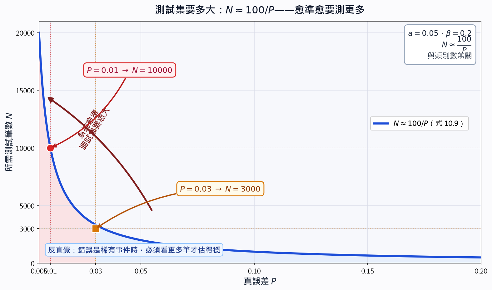
🤖 AI 生圖可用：重繪此示意圖的提示詞（結構化）
WHAT: 測試集規模口訣 N≈100/P（式 10.9，a=0.05、β=0.2）的雙曲線圖。橫軸真誤差 P∈[0.005, 0.2]，縱軸所需測試筆數 N=100/P。標出課本兩點：P=0.01→N=10000、P=0.03→N=3000。 WHY: 遮住文字仍看得出反直覺：P 愈小（系統愈準），曲線愈往上衝，測試集要愈大。錯誤是稀有事件時，必須看很多筆才估得穩——不是「愈準愈好測」。 MUST show: 1. 主曲線 N=100/P，P 從 0.005 到 0.2。 2. 課本點 P=0.01、N=10000 與 P=0.03、N=3000，含對應虛線與數值標註。 3. 公式盒：N≈100/P，並註 a=0.05、β=0.2、與類別數無關。 4. 視覺方向：P 變小則 N 變大（箭頭或左上高聳的紅色區）。 5. 公式用 mathtext：$...$。 AVOID: 名詞連連看；不要畫成 N 與 P 正相關；不要漏掉 10000／3000 這兩個原文數字；不要用線性「愈準愈少測」的錯誤直覺。 STYLE: 白／淺灰底、教育示意圖；中文標註＋ mathtext 公式；藍曲線、紅／琥珀課本點；小 P 區用暖色填滿強調「愈準愈要測更多」。
一句話
若真正錯誤率大約是 $P$，想比較有把握地保證「真誤差不會比估計值差太多」，測試集規模要到 $N\approx 100/P$ 這個數量級；誤差愈小，反而要測愈多。
是什麼
分類器已經設計完成，真正錯誤率為 $P$。我們希望決定測試集至少要多大，才能保證：以風險 $a$（也就是「說錯」的機率，$0\leq a\leq 1$）而言，$P$ 不會比測試集估出來的 $\hat{P}$ 高出超過 $\epsilon(N,a)$。寫成式 (10.8)：
$$ \begin{equation*} \operatorname{prob}\left\{P \geq \hat{P}+\epsilon(N, a)\right\} \leq a \tag{10.8} \end{equation*} $$
把超出量寫成真正誤差的比例，$\epsilon(N,a)=\beta P$。式 (10.8) 對 $N$ 沒有漂亮的解析解，但做一些近似後可得到實用上界。對典型參數 $a=0.05$、$\beta=0.2$，可簡化成式 (10.9)：
$$ \begin{equation*} N \approx \frac{100}{P} \tag{10.9} \end{equation*} $$
白話說：若你願意承擔風險 $a$，並希望保證真正的 $P$ 不會超過 $\hat{P}/(1-\beta)$，測試筆數就要到式 (10.9) 這個數量級。代入常見數字：
- $P=0.01$ 時，$N=10000$。
- $P=0.03$ 時，$N=3000$。
這個結果與類別數無關。另外，推導假設測試樣本互相獨立；若樣本不獨立，這個 $N$ 還得再加大。當目標是比較兩套錯誤率很接近的分類系統時，這種下界特別重要：差異愈小，愈需要夠大的測試集才有信心分出高下。
為什麼
直覺上「誤差愈小愈好測」其實反了。錯誤是稀有事件時，你必須看很多筆，才有機會看到足夠的錯，估計才穩。$P=0.01$ 代表平均 100 筆才錯 1 筆；若只測幾百筆，計錯率會大起大落。式 (10.9) 把「風險 $a=0.05$、相對超出 $\beta=0.2$」收成一句好記的口訣：$N\approx 100/P$。
計錯法把分類器輸出硬切成「對或錯」（1 或 0），可以看成一種極端的硬限幅。文獻裡也有人改用分類器判別函數的較平滑版本來估誤差，計錯法只是最常見、也最硬的那一種。
怎麼用 / 怎麼記
- 先有一個對 $P$ 的粗估（或規格上可接受的錯誤率）。
- 用 $N\approx 100/P$ 估測試集規模：百分之一誤差約要一萬筆，百分之三約要三千筆。
- 記住：跟有幾類無關；樣本若不獨立，再把 $N$ 加大。
- 若只是比較兩套很接近的系統，更要捨得給測試集，否則分不出誰比較好。
口訣：「風險約 5%、相對寬容約 20% 時，測試集大約是一百除以誤差率。」
在 $a=0.05$、$\beta=0.2$ 的典型設定下，原文式 (10.9) 建議測試集大小約為多少？
關於 $N\approx 100/P$ 這個測試集規模，下列哪一項符合原文？
有限資料的三種切法：resubstitution、holdout、leave-one-out
▼一句話
資料有限、又要訓練又要測試時，有三種基本切法：同一批又練又測（resubstitution）、切開兩份（holdout）、以及每次留一筆來測（leave-one-out）。它們估到的不是同一個東西，樂觀程度也不一樣。
是什麼
要估分類錯誤率，得先決定「拿哪些資料來計錯」。手上的樣本是有限的，必須同時服務訓練與測試。原文提出三種基本做法：
- Resubstitution（再代入法）：同一批資料先拿來訓練，再拿來測試。直觀就不公平：分類器已經看過這些點，再考同一批當然容易考高。分析（常態假設下）證實它會給出對真正誤差的樂觀估計。偏差大小與比值 $N/l$ 有關（$N$ 是資料筆數，$l$ 是特徵維度）；估計的變異數則與 $N$ 成反比。若要估計還算像樣，$N$ 與 $N/l$ 都得夠大：分析與模擬建議 $N/l$ 至少為 3，變異數上界為 $1/(8N)$。實務假設常不成立，經驗上這個比值還要更大；$N/l$ 愈大愈安心。
- Holdout（保留法）：把資料切成訓練子集與測試子集。最大缺點是訓練與測試兩邊都被縮小。另一個難題是：多少筆給訓練、多少筆給測試？有限訓練集會讓平均誤差比「資料無限」時更高，這個多餘誤差隨 $N$ 增大而下降；測試集太小，計錯的變異數又會很大。兩邊互相拉扯，文獻上最佳切法尚未得到真正實用的解答。
- Leave-one-out（留一法）：每次用 $N-1$ 筆訓練，留下的那 1 筆拿來測；若這筆分錯就計一次錯。重複 $N$ 次、每次換一筆留下，用總錯誤次數估誤差。好處是訓練幾乎用到全部樣本，又維持訓練與測試獨立。代價是計算量大。對線性或二次分類器，leave-one-out 與 resubstitution 之間有簡單關係，可用後者加上不重的修正得到前者。
在可比較的訓練／測試規模下，holdout 與 leave-one-out 的估計往往很接近。對貝氏分類器：holdout 誤差估計是真貝氏誤差的上界；resubstitution 則是下界，再次確認它偏樂觀。
為了把三種方法對準同一個目標，原文定義三個符號：
- $P_e^N$：用有限的 $N$ 筆訓練樣本設計出來的分類器，其分類錯誤機率。
- $\bar{P}_e^N$：對所有大小為 $N$ 的可能訓練集取平均，$\bar{P}_e^N=E[P_e^N]$。
- $P_e$：當 $N\to\infty$ 時的平均漸近誤差。
在樣本統計獨立時，holdout 與 leave-one-out 都是 $\bar{P}_e^N$ 的不偏估計；resubstitution 則是對 $\bar{P}_e^N$ 的有偏、低估估計。Figure 10.1 的趨勢是：把平均 resubstitution 誤差與 leave-one-out（代表 $\bar{P}_e^N$）對 $N$ 作圖，兩者都隨 $N$ 增大而靠近漸近值 $P_e$；小 $N$ 時 resubstitution 明顯偏低，leave-one-out 則較能反映有限樣本的真實難度。
為什麼
核心衝突是「訓練想多、測試也想多」，但總樣本只有 $N$ 筆。Resubstitution 假裝沒有這個衝突，所以分數會灌水。Holdout 誠實切開，卻讓分類器變弱、測試也變吵。Leave-one-out 幾乎不浪費訓練資料，又保持獨立，所以理論上漂亮，只是要重訓 $N$ 次。
變型可以提一句：leave-one-out 可改成每次留 $k\gt 1$ 筆（leave-$k$-out）；也有人用 active pattern selection，只對少數「看起來比較可能會錯」的點做留出測試，以減輕計算負擔。
怎麼用 / 怎麼記
- 資料很多：holdout 最單純，記得兩邊都要夠大。
- 資料少又想公平：優先想 leave-one-out（或 leave-$k$-out）。
- 千萬別只報 resubstitution：它低估 $\bar{P}_e^N$，對貝氏問題還是真誤差的下界。
- 檢查 $N/l$：至少 3，實務上更大；變異數不要期望比 $1/(8N)$ 更好。
口訣：「自己考自己，分數一定比較好看；切開兩份，兩邊都變小；每次留一筆最公平，但最貴。」
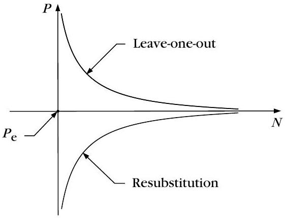
關於 resubstitution，下列哪一項最符合原文分析？
就 $P_e^N$、$\bar{P}_e^N$、$P_e$ 這組定義而言，holdout 與 leave-one-out 估的是什麼？
Bootstrap 與 0.632 估計器
▼🤖 AI 生圖可用：重繪此示意圖的提示詞（結構化）
WHAT: Bootstrap 有放回抽樣示意圖。左側為含 6–8 個原點的原始資料袋 X（N=7），右側為同樣 N 個位置的 Bootstrap 設計集 X*。 WHY: 讓讀者即使遮住文字也能看出反直覺：設計集「大小仍是 N」，但內容不是「每個原點各出現一次」——有的點被抽到兩次，有的原點完全缺席。 MUST show: 左袋 7 個可辨識原點（a–g）；箭頭標「有放回」；右側 7 個 slot 中 a、c 各出現兩次（標 ×2）、e 以虛線空位＋✗ 表示「沒抽到」；底部強調「7 個位置 ≠ 7 個不同原點」；配色主色 #4f46e5。 AVOID: LaTeX 或數學公式；方框＋術語連連看流程圖；暗示無放回抽樣；外鏈字體。 STYLE: 離線 inline SVG，viewBox 740×400，系統 sans + 繁中，淺紫底 #f7f8fd，indigo accent #4f46e5，卡片白底圓角，因果關係靠重複／缺席的視覺對比傳達。
一句話
資料太少時 leave-one-out 估計變異大，bootstrap 用有放回抽樣「人造」更多設計集來估誤差；0.632 估計器再把重代入誤差 $e_{res}$ 與 bootstrap 誤差 $e_0$ 做凸組合，小樣本特別好用。
是什麼
設原始資料集為 $X$，大小 $N$。bootstrap 設計集 $X^*$ 也是 $N$ 筆，但從 $X$ 以有放回隨機抽樣組成——某筆 $\boldsymbol{x}_i$ 被抽進 $X^*$ 後仍留在 $X$ 裡，下一輪還可能被再抽到。
一種直覺做法：
- 用某次 bootstrap 樣本 $X^*$ 訓練分類器；
- 用這次沒被抽進 $X^*$ 的原始樣本當測試集，數誤分個數；
- 換不同 bootstrap 樣本重複多次，把所有測試誤差加總再除以總測試樣本數，得到 bootstrap 誤差估計 $e_0$。
另外還有 0.632 估計器（Efron, 1983）：把重代入誤差 $e_{res}$ 與 $e_0$ 做凸組合
$$ e_{0.632} = 0.368\, e_{res} + 0.632\, e_0 $$
後續延伸（Sima 06）可對多種估計器做凸組合，並用最佳化求權重。
為什麼
- 小樣本 LOO 變異大： leave-one-out 每次只留一筆測試，樣本少時估計值跳動很劇烈（Efron, 1983）。bootstrap 的哲學是：在有限資料下「人造」更多設計集，多觀察估計量的統計行為。
- bootstrap 不是永遠贏 LOO： Raudys (1991) 指出，bootstrap 只有在分類誤差本來就偏大時，才明顯優於 leave-one-out；誤差小時優勢有限。
- 0.632 為何有效： 重代入 $e_{res}$ 通常偏樂觀（低估真實誤差），bootstrap $e_0$ 則相對偏保守；0.368 與 0.632 這組權重在小樣本上經驗上能取得不錯折衷（Braga-Neto & Dougherty, 2004）。
怎麼用 / 怎麼記
- 流程口訣：「有放回抽 $X^*$ → 沒抽到的當測試 → 重複得 $e_0$ → 必要時跟 $e_{res}$ 混成 0.632」。
- 何時優先考慮： 訓練點 $N$ 很小、LOO 結果忽高忽低時，可試 bootstrap 或 0.632；若已知誤差率很低，別期待 bootstrap 一定打贏 LOO。
- 權重延伸： 若有多種誤差估計器，可讓凸組合權重由資料驅動的最佳化決定，而不是固定 0.368 / 0.632。
0.632 估計器的公式為何？
根據 Raudys (1991)，bootstrap 相對 leave-one-out 的主要優勢通常出現在什麼情況？
混淆矩陣、Recall、Precision 與整體正確率
▼🤖 AI 生圖可用：重繪此示意圖的提示詞（結構化）
WHAT: 混淆矩陣 Recall vs Precision 分母對照圖。使用原文 2×2 矩陣 [[110,20],[30,120]]，從左上角 110 分別連到兩個不同分母。 WHY: 讓讀者看出反直覺：同一個 110 同時是 Recall 與 Precision 的分子，但 Recall 分母是列和 130、Precision 分母是行和 140——兩個指標問的問題不同，不可互換。 MUST show: 2×2 格子內只寫阿拉伯數字 110/20/30/120；110 高亮；向右箭頭連列和 130 標 Recall；向下箭頭連行和 140 標 Precision；右側註記 110÷130 與 110÷140 及口語解釋；配色主色 #4f46e5、輔色 #7c3aed。 AVOID: LaTeX（如 R₁、分數式子用 $...$）；方框流程圖；只畫矩陣不標分母因果；外鏈字體。 STYLE: 離線 inline SVG，viewBox 740×440，系統 sans + 繁中，淺紫底，indigo/violet 雙色箭頭區分 Recall 與 Precision，遮字後仍可由箭頭方向看出列和 vs 行和。
一句話
混淆矩陣 $A$ 把「真類 $i$ 被分到類 $j$」的個數排成表；從中可算各類 recall、precision，以及整體正確率 $Ac$——光看總誤差率有時不夠，還得看哪兩類最容易搞混。
是什麼
對 $M$ 類問題，混淆矩陣 $A=[A(i,j)]$ 的元素定義為：真類標籤是 $i$、卻被分類器判成 $j$ 的樣本個數。
從 $A$ 可直接讀出：
- Recall（$R_i$）： 真屬於類 $i$ 的樣本裡，有多少比例被正確分回類 $i$。二類問題中 $R_1=\dfrac{A(1,1)}{A(1,1)+A(1,2)}$。
- Precision（$P_i$）： 被分類器判成類 $i$ 的樣本裡，有多少比例真屬於類 $i$。二類問題中 $P_1=\dfrac{A(1,1)}{A(1,1)+A(2,1)}$。
- 整體正確率（$Ac$）： 全部測試樣本中被正確分類的比例，$Ac=\dfrac{1}{N}\sum_{i=1}^{M} A(i,i)$。
原文數字例（二類）： 測試集 $\omega_1$ 有 130 點、$\omega_2$ 有 150 點。分類器把 $\omega_1$ 的 110 點分對、20 點錯分到 $\omega_2$；把 $\omega_2$ 的 120 點分對、30 點錯分到 $\omega_1$。混淆矩陣為
$$ A=\begin{bmatrix}110&20\\30&120\end{bmatrix} $$
計算結果：
- $R_1=\dfrac{110}{130}\approx 0.846$（約 84.6%）
- $P_1=\dfrac{110}{140}\approx 0.786$（約 78.6%）
- $R_2=\dfrac{120}{150}=0.800$（80%）
- $P_2=\dfrac{120}{140}\approx 0.857$（約 85.7%）
- $Ac=\dfrac{110+120}{130+150}=\dfrac{230}{280}\approx 0.821$（約 82.1%）
為什麼
- 總誤差率藏細節： 整體 $Ac\approx 82\%$ 看起來還行，但 $\omega_1$ 有 20/130 被漏判、$\omega_2$ 有 30/150 被誤判——若某類漏判代價特別高（如疾病篩檢），recall 比總準確率更重要。
- Recall vs Precision 分工不同： recall 問「真陽性抓到了多少？」；precision 問「我判陽性的有多少是真的？」——兩者分母不同，不可互換。
- 非對角元素 = 混淆來源： $A(1,2)=20$ 與 $A(2,1)=30$ 直接指出 $\omega_1$ 與 $\omega_2$ 互相搞混的方向與嚴重程度。
怎麼用 / 怎麼記
- Recall 口訣：「真類 $i$ 裡分對的比例」→ 分母是第 $i$ 列總和（真屬 $i$ 的全部樣本）。
- Precision 口訣：「判成 $i$ 的裡面真是 $i$ 的比例」→ 分母是第 $i$ 欄總和（所有被判成 $i$ 的樣本）。
- $Ac$ 口訣：「對角線加總除以 $N$」——本例 $(110+120)/280$。
- 實務： 類別不平衡或代價不對稱時，一定畫混淆矩陣，別只報一個 error rate。
沿用原文混淆矩陣 $A=\begin{bmatrix}110&20\\30&120\end{bmatrix}$，類 $\omega_1$ 的 recall $R_1$ 為何？
同一例中，整體正確率 $Ac$ 約為多少？
醫學影像案例（一）：任務、五類與樹狀分類器
▼一句話
肝臟超音波要分正常、肝硬化、脂肪浸潤（各還分嚴重度，共五類）；視覺差異小、很靠醫師經驗——用樹狀二分類器把大任務拆成多個小決策，並從一開始就跟醫師對齊需求與前處理。
是什麼
任務： 輸入肝臟超音波影像，自動判斷正常或異常，並對異常進一步區分肝硬化與脂肪浸潤，且依病程嚴重度再細分——合計五個類別（Figure 10.3 的任務示意）。
資料難點： Figure 10.2 那類影像中，正常、脂肪浸潤、肝硬化在視覺上差異不大，臨床判讀高度依賴醫師技巧；模式辨識系統可輔助評估、搭配其他檢查降低侵入性切片需求。
資料量： 某醫學中心 150 張超音波——正常 50 張、肝硬化 55 張、脂肪浸潤 45 張。
樹狀分類器（Figure 10.4）： 不一次做五選一，而是在每個節點做二分類：
- 節點 1： 正常 vs 異常；
- 節點 2： 異常樣本再分肝硬化 vs 脂肪浸潤；
- 後續節點再依嚴重度繼續二分，直到五類都分完。
好處是把複雜多類問題拆成一串較簡單的二分問題；但其他應用未必適用這種層級結構。
設計前必做：
- 與專科醫師建立共同語言，釐清可接受誤差率、系統複雜度、運算時間、成本等需求；
- 影像前處理（如增強）讓分類器只看到有用資訊。
為什麼
- 五類一次分 vs 樹狀： 單一五類分類器邊界複雜；樹狀每步只分兩邊，決策邊界較單純，也符合「先篩正常、再細分異常」的臨床思維。
- 醫師參與不是可選： 可接受誤差、關心的是紋理還是形狀——這些都影響特徵與分類器選擇；沒對齊需求，模型再準也難上臨床。
- 前處理省後面力： 超音波雜訊大，適度增強能讓後續 38 維紋理特徵更穩定（下一知識點會用到）。
怎麼用 / 怎麼記
- 樹狀口訣：「根節點先二分，往下越分越細；每層一個分類器，五類靠路徑抵達」。
- 設計順序： 跟醫師定目標 → 前處理 → 決定單分類器或樹狀 → 再進特徵與訓練（見 KP-8）。
- 記數字： 150 張 = 50 正常 + 55 肝硬化 + 45 脂肪；五類來自「兩種病 × 嚴重度 + 正常」。
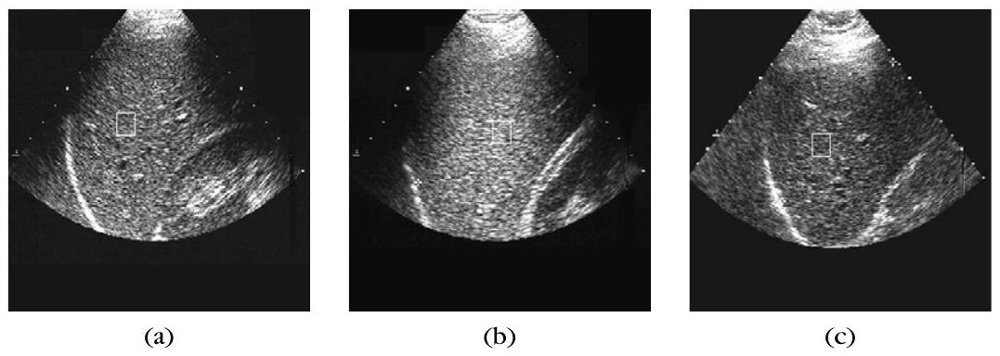
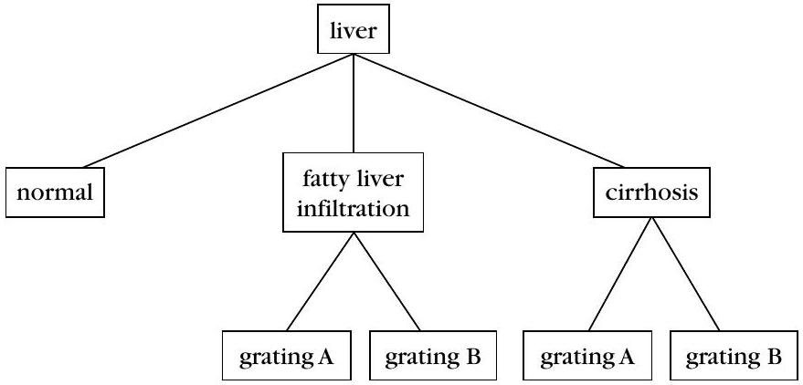
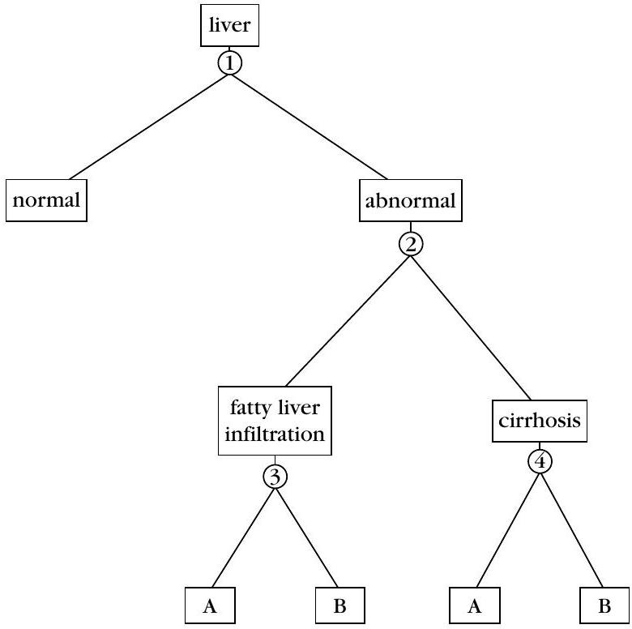
本案例採樹狀分類器時，第一個節點通常做什麼決策？
本案例使用的超音波影像資料集，下列哪組數字正確？
醫學影像案例（二）：特徵篩選與三種分類器比較
▼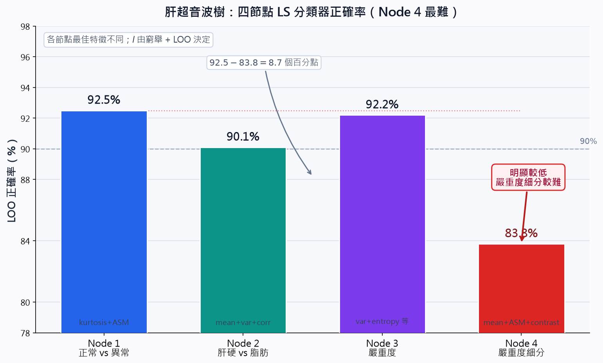
🤖 AI 生圖可用：重繪此示意圖的提示詞（結構化）
WHAT: 肝超音波樹狀分類器四個節點的 LOO 正確率長條圖，使用原文數字：Node1 92.5%、Node2 90.1%、Node3 92.2%、Node4 83.8%。Node4 用紅色凸顯明顯較低。可附註各節點最佳特徵（kurtosis+ASM、mean+var+corr、var+entropy 等、mean+ASM+contrast）與任務（正常 vs 異常／肝硬 vs 脂肪／嚴重度）。 WHY: 遮住文字仍看得出：前三節點都在約 90–92%，唯獨 Node4 掉到 83.8%——嚴重度細分時類別更相近，所以更難。不是四根差不多高的裝飾長條。 MUST show: 1. 四根長條，數值 92.5 / 90.1 / 92.2 / 83.8，標在柱頂。 2. Node4 用對比色（紅）且 y 軸不要從 0 起跳（約 78–98%），讓落差一眼可見。 3. 標出與 Node1 約 8.7 個百分點的差距，並註「嚴重度細分較難」。 4. 特徵名稱只當短註，不要塞滿文字。 5. 公式／符號用 mathtext：$...$（如 90%、百分點差）。 AVOID: 名詞連連看；y 軸從 0 起導致四根看起來差不多高；不要把 Node4 畫成與其他節點同等容易；不要堆疊 38 維特徵清單或三種分類器比較表。 STYLE: 白／淺灰底、教育示意圖；中文短標＋原文百分數；前三節點冷色、Node4 紅色；長條圖而非流程圖。
一句話
每個樹節點用 Ch7 的 38 維紋理特徵，先 t-test 篩再窮舉子集配 LS 線性分類器、以 leave-one-out 估誤差；最後 LS 打贏歐氏最小距離與 kNN——而且特徵選擇、分類器設計、誤差估計三者在這個小問題裡是綁在一起做的。
是什麼
與醫師討論後，重點放在影像紋理；用第 7 章 §7.2.1 方法抽出38 維特徵。三種分類器（LS 線性、歐氏最小距離、kNN）在每個節點都比較過，最終各節點皆採 LS 線性分類器，因為另兩者 LOO 誤差估計始終較高。
節點 1（正常 vs 異常）：
- 38 維逐一做 $t$-test，顯著水準 0.001，剩 19 維；
- 19 仍接近正常樣本數 $N=50$，泛化風險大，故窮舉 2～7 元組所有組合；
- 每組合設計 LS 分類器，以 leave-one-out 估誤差；
- 超過 2 維改善不大 → 取 $l=2$，最佳組合為 kurtosis + ASM，正確率 92.5%。
其餘節點（皆用異常子集、同樣流程）：
- 節點 2： 15 維過 $t$-test；最佳 mean, variance, correlation，正確率 90.1%（注意 variance 在節點 1 被 $t$-test 刷掉，這裡又入選）。
- 節點 3： variance, entropy, sum entropy, difference entropy，92.2%。
- 節點 4： mean, ASM, contrast，83.8%。
為什麼
- 三階段耦合： 特徵子集、分類器參數、誤差估計在同一次窮舉裡一起決定——小規模（150 張、38 維）才做得到；換成大型神經網路或超高維特徵空間，就無法這樣全搜，得用第 5 章那類特徵選擇，且理想上應直接最小化誤差率而非 LS 代理目標。
- $t$-test 只是第一刀： 節點 1 從 38→19，但 19 對 $N=50$ 仍太多，才需要窮舉配對；節點間「哪些特徵有用」可以不同（variance 即例）。
- LS 勝出： 在此紋理特徵空間，線性 LS 的 LOO 估計優於歐氏最小距離與 kNN——不代表所有問題都該選 LS，只是本案例實測結果。
怎麼用 / 怎麼記
- 節點 1 關鍵數字： $l=2$，kurtosis + ASM，92.5%。
- 窮舉停損： 子集大小 > 2 誤差改善不顯著就停——避免維度詛咒。
- 口訣：「t-test 粗篩 → 窮舉子集 → LOO 估誤差 → 三種分類器比一輪；小問題能綁在一起做，大問題得拆開」。
- 四節點成績速記： 92.5% / 90.1% / 92.2% / 83.8%（節點 4 最難，可能因細分嚴重度類別更相近）。
節點 1 的 LS 線性分類器，經窮舉與 leave-one-out 後，最佳特徵組合與正確率為何？
關於本案例的分類器比較與設計流程，下列何者正確？
半監督學習：歸納 vs 轉導，為什麼需要未標籤資料
▼一句話
半監督學習放寬了前面所有方法賴以生存的兩根柱子：不再只用標籤資料，也不再只關心「未來未知點」的泛化；轉導（transductive inference）是專門為「現在手上這批未標籤點」最佳化，而不是為將來的新資料。
是什麼：從歸納到半監督、再到轉導
到目前為止，本書的方法都建立在兩個前提上：
- 只用標籤資料訓練：設計好分類器後，才能預測新點的類別。
- 關心泛化：最終目標是歸納推理（inductive inference）——學到一條能對「未來、未見過的點」也管用的通用規則。
§10.5 把這兩根柱子都放寬了。首先，未標籤資料被拉進來：能不能跟標籤資料一起用，讓表現更好？其次，有些設計不再盯著「未來未知點」，而是把 loss 完全放在「設計當下手上這批未標籤點」——這就叫轉導推理（transductive inference），跟前面那種為未來做準備的歸納推理相對。
為什麼需要未標籤資料：標籤貴、未標籤便宜
現實中，收集未標籤資料往往比標籤容易得多：
- 生資（bioinformatics）：蛋白質分類等領域，未標籤資料很多，真正標好標籤的只有一小撮，還得靠專家。
- 文本分類：網路上文本到處都是，但要專家來標類別，既花時間又貴。
- 音樂類型：取得未標籤音檔很容易，但要決定某首曲子屬於哪個 genre，主觀性高、標註很費工。
所以半監督學習的動機很直白：既然未標籤資料便宜又 abundant，能不能讓它幫忙把決策邊界畫得更準？
歸納 vs 轉導：目標對象不同
- 歸納（inductive）：訓練完之後，分類器要能對「任何新來的、沒見過的點」給出預測——這是傳統監督式學習的標準目標。
- 轉導（transductive）：設計時已知一批未標籤點就在那裡，最佳化只為這批點服務；不承諾對將來全新的點也同樣好。Vapnik 在 1970 年代就提出這個概念。
白話記：歸納是「學規則、以後都能用」；轉導是「這批題目就在卷子上，就為這批題目把答案寫好」。
怎麼用 / 怎麼記
- 半監督 = 標籤 + 未標籤一起上；轉導 = 未標籤點是「已知的待答題」，不是「未來才會出現的考題」。
- 動機口訣：「標籤貴、未標籤便宜，能撈就撈」。
- Fig 10.5、10.6 會在下一個知識點說明：未標籤資料怎麼改變我們對「?」點的判斷——這裡先記住「為什麼要引進未標籤」就夠了。
轉導推理（transductive inference）與歸納推理（inductive inference）最核心的差別是什麼？
下列哪個例子最符合「未標籤便宜、標籤貴」的半監督動機？
群集假設、流形假設與半監督平滑假設
▼一句話
未標籤資料能幫上忙，前提是資料有某種結構：同群集多半同類（群集假設）、流形上相近的點多半同類（流形假設）；更一般地，高密度區相連的點輸出應接近——重點是「距離本身不夠，要放進資料分布的脈絡裡」。
是什麼：Fig 10.5 與群集假設
Fig 10.5a：只有兩個標籤點（* 與 +）和一個未知點 ?。資訊這麼少，最合理的判斷是把 ? 分到 * 那類。
Fig 10.5b：加上一堆未標籤點之後，整體的群集結構浮現出來——? 其實跟 + 那群靠在一起，你會想改判到 + 那類。
這背後就是群集假設（cluster assumption）：若兩個點落在同一個群集裡，它們很可能來自同一個類別。
Fig 10.6 與流形假設
Fig 10.6a：同樣只有三個點，? 還是會判成 *。
Fig 10.6b：未標籤點揭露資料其實躺在一條流形上。這時若用測地距離（沿流形走的最短路）而不是歐氏距離，? 反而更靠近 + 而不是 *——判決又要改了。
流形假設（manifold assumption）有兩種等價說法：
- 邊際分布 $p(\boldsymbol{x})$ 的 support 在一條流形上；流形上彼此靠近的點，較可能同類。
- 條件分布 $P(y\mid\boldsymbol{x})$ 對流形上的結構是平滑的函數。
半監督平滑假設：更一般的版本
上面兩個假設都可以看成更一般假設的特例（同時涵蓋分類與迴歸）：
半監督平滑假設（semi-supervised smoothness assumption）：若兩個點在高密度區域裡彼此靠近，它們的輸出（類別或數值）應該也接近。
- 若兩點靠很近，而且中間可以走一條穿過高密度區的路徑連起來 → 輸出應該接近。
- 若連接它們的路徑必須穿過低密度區 → 輸出不必接近。
為什麼：距離本身不夠
Fig 10.5 和 10.6 都在說同一件事：光看歐氏距離最近的是誰，可能會判錯。必須把「靠近」放進資料分布的脈絡——是群集？是流形？是高密度通道？——未標籤資料才會真正改變決策。
怎麼用 / 怎麼記
- 群集：Fig 10.5，同堆 → 同類。
- 流形：Fig 10.6，沿流形近 → 同類；$P(y\mid x)$ 在流形上平滑。
- 平滑：高密度連通 → 輸出近；低密度隔開 → 不必近。
- 口訣：「距離要問分布，未標籤才看得見結構」。
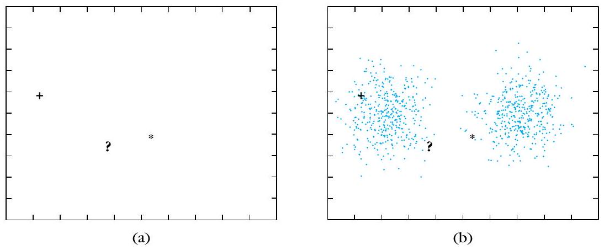
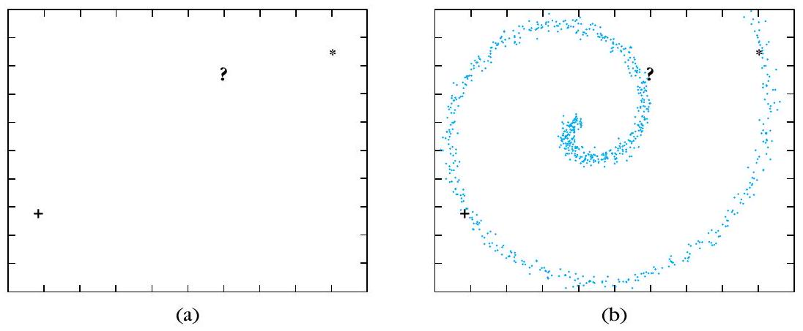
依 Fig 10.5，加入未標籤資料後為什麼會改判未知點 ? 的類別？
半監督平滑假設對「兩點輸出是否應接近」的條件，下列哪個敘述正確？
生成模型：混合密度與標籤/未標籤對數概似
▼一句話
生成模型用標籤加未標籤資料一起估 $p(\boldsymbol{x}\mid y;\boldsymbol{\theta})$，再推出 $p(\boldsymbol{x})$、$p(y,\boldsymbol{x})$、$P(y\mid\boldsymbol{x})$；兩個獨立資料集的 log-likelihood 可以直接相加，最大化 $L_u+L_l$ 就是半監督 EM 的起點。
是什麼：從類條件到 Bayes 分類所需量
生成模型的核心：先建模類條件密度 $p(\boldsymbol{x}\mid y;\boldsymbol{\theta})$，利用標籤與未標籤資料共同估計參數 $\boldsymbol{\Theta}=[\boldsymbol{\theta}^T,\boldsymbol{P}^T]^T$。有了 $p(\boldsymbol{x}\mid y)$ 與先驗 $P(y)$（或估計 $P_y$），就能依第 2 章公式得到：
$$ \begin{equation*} p(\boldsymbol{x})=\sum_{y} P(y) p(\boldsymbol{x} \mid y) \tag{10.10} \end{equation*} $$ $$ \begin{equation*} p(y, \boldsymbol{x})=P(y) p(\boldsymbol{x} \mid y) \tag{10.11} \end{equation*} $$ $$ \begin{equation*} P(y \mid \boldsymbol{x})=\frac{P(y) p(\boldsymbol{x} \mid y)}{\sum_{y} P(y) p(\boldsymbol{x} \mid y)} \tag{10.12} \end{equation*} $$
類別標籤 $y\in\{1,2,\ldots,M\}$。式 (10.12) 就是 Bayes 分類器需要的後驗機率。
混合模型 (10.13)
邊際密度寫成混合形式（簡化版：每類一個混合成分，可放寬為每類多成分）：
$$ \begin{equation*} p(\boldsymbol{x} ; \boldsymbol{\Theta})=\sum_{y=1}^{M} P_{y} p(\boldsymbol{x} \mid y ; \boldsymbol{\theta}) \tag{10.13} \end{equation*} $$
資料分兩類獨立集合：
- $D_u$（未標籤）：$N_u$ 個 $\boldsymbol{x}_i$，i.i.d. 來自邊際 $p(\boldsymbol{x};\boldsymbol{\Theta})$。
- $D_l$（標籤）：$N_l$ 個樣本，專家標好類別；第 $y$ 類有 $N_y$ 個，記為 $\boldsymbol{z}_{iy}$，$N_l=\sum_y N_y$。
對數概似：$L_u$ 與 $L_l$
統計學基本結論：若觀測是兩個獨立集合的聯集，總 log-likelihood 等於兩邊各自 log-likelihood 之和。因此：
未標籤 $D_u$ 的 $L_u$（式 10.14）——對邊際混合取 log，類別 $y$ 是隱藏的：
$$ \begin{equation*} L_{u}(\boldsymbol{\Theta})=\sum_{i=1}^{N_{u}} \ln p\left(\boldsymbol{x}_{i} ; \boldsymbol{\Theta}\right)=\sum_{i=1}^{N_{u}} \ln \sum_{y=1}^{M} P_{y} p\left(\boldsymbol{x}_{i} \mid y ; \boldsymbol{\theta}\right) \tag{10.14} \end{equation*} $$
標籤 $D_l$ 的 $L_l$（式 10.15）——有完整觀測 $(y,\boldsymbol{z}_{iy})$，外加多項式係數（與 $\boldsymbol{\theta},\boldsymbol{P}$ 無關，實務上可略）：
$$ \begin{equation*} L_{l}(\boldsymbol{\Theta})=\sum_{y=1}^{M} \sum_{i=1}^{N_{y}} \ln \left(P_{y} p\left(\boldsymbol{z}_{i y} \mid y ; \boldsymbol{\theta}\right)\right)+\ln \frac{N_{l}!}{N_{1}!N_{2}!\ldots N_{M}!} \tag{10.15} \end{equation*} $$
若只有 $D_u$，問題就退化成第 2.5.5 節的混合建模（隱藏類別標籤）。半監督時要最大化 $L_u(\boldsymbol{\Theta})+L_l(\boldsymbol{\Theta})$，通常用 EM 演算法。
為什麼：兩個獨立集合 log-likelihood 可相加
這不是半監督特有的技巧，而是獨立資料集的基本性質：$D_u$ 與 $D_l$ 各自獨立產生，聯合概似 = 兩者相乘 → 取 log 變相加。實作上就是把未標籤項（對邊際混合）和標籤項（對已知 $y$ 的聯合）放在同一個目標函數裡一起最佳化。
怎麼用 / 怎麼記
- 生成路線：估 $p(x\mid y)$ → 得 $p(x)$、$P(y\mid x)$。
- $L_u$：未標籤，對 $\ln\sum_y P_y p(x\mid y)$ 求和（隱藏 $y$）。
- $L_l$：標籤，對 $\ln(P_y p(z\mid y))$ 求和（已知 $y$）。
- 口訣：「獨立兩袋資料，log 概似直接加；未標籤看邊際，標籤看聯合」。
未標籤集合 $D_u$ 的對數概似 $L_u$（式 10.14）與標籤集合 $D_l$ 的 $L_l$（式 10.15）在形式上最主要的差別是什麼？
為什麼半監督生成模型可以把 $L_u$ 和 $L_l$ 直接相加來最大化？
半監督 EM：均值/變異數/先驗的重估與模型錯配風險
▼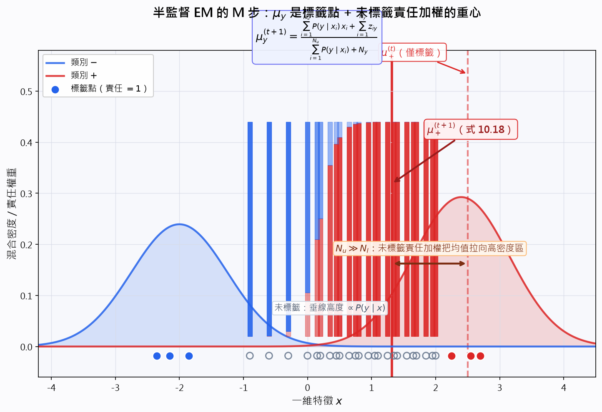
🤖 AI 生圖可用：重繪此示意圖的提示詞（結構化）
WHAT: 製作一張「半監督 EM 更新類別均值 μ_y（式 10.18 精神）」的一維雙高斯教育示意圖。x 軸為特徵，背景疊兩類高斯混合密度；實心圓點為已知標籤樣本（每點對該類責任硬計為 1）；空心半透明圓點為未標籤樣本，從各點向上畫分段垂線，高度／色深代表 P(y|x) 的責任分配。以類別 + 為例，並排標出「僅標籤的 μ_+^(t)」與「M 步更新後 μ_+^(t+1)」，用雙向箭頭強調 N_u≫N_l 時未標籤加權會把均值拉向未標籤高密度區。 WHY: 讀者需直觀理解 E 步只對未標籤算期望、M 步把責任加權未標籤與硬標籤合併重估均值；反直覺點是未標籤數量遠大於標籤時，分母中的責任和會主導更新，可能偏離少數標籤點所暗示的位置——這是模型錯配與 N_u≫N_l 風險的幾何版。 MUST show: 兩條一維高斯密度曲線（兩類不同色）；3 個左右各類的實心標籤點；20+ 個未標籤空心點與責任垂線；式 10.18 的 μ_y 更新公式；μ_+^(t) 虛線 vs μ_+^(t+1) 實線及位移註解；標註「N_u≫N_l：未標籤責任加權把均值拉向高密度區」；中文標題與圖例。 AVOID: 不要畫成二維散點圖；不要省略未標籤與標籤的視覺區分；不要讓兩類均值更新看起來完全相同；不要只畫公式沒有幾何對應；不要改 index.html 或做 integrate。 STYLE: matplotlib PNG，中文字型 msjh.ttc；背景淺灰白 #f7f8fc；類別 − 藍 #2563eb、類別 + 紅 #dc2626；未標籤灰框＋責任色柱；dpi 150；figsize 約 11.5×6.8；公式用 mathtext dejavusans。
一句話
以高斯類條件為例，E 步只有未標籤需要對隱藏類別取期望；M 步把責任加權的未標籤點和已知標籤點合併重估 $\boldsymbol{\mu}_y$、$\sigma_y^2$、$P_y$——但模型錯配可能讓未標籤反而害你，且 $N_u\gg N_l$ 時未標籤項會主導。
是什麼：高斯類條件與 E 步 (10.17)
假設每類條件密度為高斯（式 10.16）：
$$ \begin{equation*} p(\boldsymbol{x} \mid y ; \boldsymbol{\theta})=\frac{1}{\left(2 \pi \sigma_{y}^{2}\right)^{l / 2}} \exp \left(-\frac{\left\|\boldsymbol{x}-\boldsymbol{\mu}_{y}\right\|^{2}}{2 \sigma_{y}^{2}}\right) \tag{10.16} \end{equation*} $$
E 步（式 10.17）：Q 函數包含未標籤與標籤兩部分，但期望運算只對未標籤樣本需要——標籤資料的類別已知，不用對 $y$ 取期望：
$$ \begin{align*} Q(\boldsymbol{\Theta} ; \boldsymbol{\Theta}(t))= & \sum_{i=1}^{N_{u}} \sum_{y=1}^{M} P\left(y \mid \boldsymbol{x}_{i} ; \boldsymbol{\Theta}(t)\right) \ln \left(p\left(\boldsymbol{x}_{i} \mid y ; \boldsymbol{\mu}_{y}, \sigma_{y}^{2}\right) P_{y}\right) \\ & +\sum_{y=1}^{M}\sum_{i=1}^{N_{y}} \ln \left(p\left(\boldsymbol{z}_{i y} \mid y ; \boldsymbol{\mu}_{y}, \sigma_{y}^{2}\right) P_{y}\right) \tag{10.17} \end{align*} $$
M 步：均值、變異數、先驗 (10.18)–(10.20)
把第 2 章純未標籤 EM 的更新式修改如下：
$$ \begin{align*} \boldsymbol{\mu}_{y}(t+1)= & \frac{\sum_{i=1}^{N_{u}} P\left(y \mid \boldsymbol{x}_{i} ; \boldsymbol{\Theta}(t)\right) \boldsymbol{x}_{i}+\sum_{i=1}^{N_{y}} \boldsymbol{z}_{i y}}{\sum_{i=1}^{N_{u}} P\left(y \mid \boldsymbol{x}_{i} ; \boldsymbol{\Theta}(t)\right)+N_{y}} \tag{10.18}\\ \sigma_{y}^{2}(t+1)= & \frac{\sum_{i=1}^{N_{u}} P\left(y \mid \boldsymbol{x}_{i} ; \boldsymbol{\Theta}(t)\right)\left\|\boldsymbol{x}_{i}-\boldsymbol{\mu}_{y}(t+1)\right\|^{2}}{l\left(\sum_{i=1}^{N_{u}} P\left(y \mid \boldsymbol{x}_{i} ; \boldsymbol{\Theta}(t)\right)+N_{y}\right)} \\ & +\frac{\sum_{i=1}^{N_{y}}\left\|\boldsymbol{z}_{i y}-\boldsymbol{\mu}_{y}(t+1)\right\|^{2}}{l\left(\sum_{i=1}^{N_{u}} P\left(y \mid \boldsymbol{x}_{i} ; \boldsymbol{\Theta}(t)\right)+N_{y}\right)} \tag{10.19}\\ P_{y}(t+1)= & \frac{1}{N_{u}+N_{l}}\left(\sum_{i=1}^{N_{u}} P\left(y \mid \boldsymbol{x}_{i} ; \boldsymbol{\Theta}(t)\right)+N_{y}\right) \tag{10.20} \end{align*} $$
白話解讀：
- $\boldsymbol{\mu}_y$：分子 = 未標籤的責任加權和 + 該類所有標籤點 $\boldsymbol{z}_{iy}$ 之和；分母 = 未標籤責任總和 + $N_y$。
- $\sigma_y^2$：同樣分母，分子分別累積未標籤與標籤的加權平方距離。
- $P_y$：分母是 $N_u+N_l$（全部樣本數），分子是未標籤對類 $y$ 的責任總和 + 該類標籤數 $N_y$。
為什麼：Remarks 三個實務警訊
- 模型錯配風險：若混合模型正確描述真實邊際密度，用未標籤資料保證有幫助（Cast 96）。但若模型不符合真實分布，加入未標籤可能讓表現變差——實務上很難確知真實分布長什麼樣，Cohe 04 有理論支持。
- $N_u\gg N_l$ 主導問題：看式 (10.14)(10.15) 和 (10.18)–(10.20)，未標籤項通常壓過標籤項。實務上常對兩項 log-likelihood 加權（Cord 02, Niga 00）。
- EM 局部極大：EM 可能困在局部最大值，這也是未標籤可能拖累表現的來源之一（Niga 00）。
怎麼用 / 怎麼記
- E 步口訣：「未標籤要期望，標籤類別已知不用猜」。
- M 步口訣：「均值分母 = 責任和 + $N_y$；先驗分母 = $N_u+N_l$」。
- 風險口訣：「模型對了才保證加分；模型錯了可能扣分；未標籤太多記得加權」。
半監督 EM 的 E 步（式 10.17）中，對隱藏類別標籤 $y$ 取期望（$P(y\mid\boldsymbol{x}_i)$）的是哪一部分資料？
關於生成模型半監督學習的 Remarks，下列哪個敘述正確？
式 (10.20) 更新先驗 $P_y$ 時，分母是什麼？
圖方法：Laplacian 正則化與 LRKLS
▼🤖 AI 生圖可用：重繪此示意圖的提示詞（結構化）
WHAT: 圖 Laplacian 平滑示意——左側為含標籤點（+ / −）與未標籤點的加權圖，右側為對應 g 值被拉成平滑漸層的對照。 WHY: 讓讀者看出反直覺：歐氏距離近但沒有（粗）邊的點對不會被拉近；只有高權重 W 的粗邊才會迫使 g 值相近；遠端弱連線幾乎不影響。 MUST show: 左圖 + 與 − 之間沿彎曲路徑的粗 indigo 邊鏈（W 大）；數個灰色未標籤節點；一對空間近但僅虛線／無粗邊、標「無粗邊 ✗」；右側 g 值條從 + 端高到 − 端低呈漸層，近無邊點 g 差異大；弱連線對應 g 幾乎不變；配色 #4f46e5。 AVOID: 任何公式（gᵀLg、W(i,j) 等 LaTeX）；方框術語圖；只畫距離圈不畫邊權；外鏈字體。 STYLE: 離線 inline SVG，viewBox 740×400，左右雙欄對照（圖 → 平滑後 g），系統 sans + 繁中，粗細線對比傳達邊權，漸層 bar 傳達 g 平滑。
一句話
判別方法不先去建 $p(\boldsymbol{x})$，未標籤卻可以靠「鄰居的預測該長得像」這條流形正則進來：相鄰點 $g(\boldsymbol{x}_i)\approx g(\boldsymbol{x}_j)$，整段懲罰寫成 $\boldsymbol{g}^{T}\boldsymbol{L}\boldsymbol{g}$，而 $L=D-W$；Representer 還是成立，連未標籤點一起展開。
是什麼
分類的終點永遠是「看到 $\boldsymbol{x}$ 猜標籤」。生成模型會去模擬資料怎麼被生出來，連 $p(\boldsymbol{x}\mid y)$ 一起建，於是 $p(\boldsymbol{x})$、$p(y,\boldsymbol{x})$、$P(y\mid\boldsymbol{x})$ 全有了。但這本書大多數方法走另一條路：既然只要標籤，就直接建我們真正需要的東西。Vapnik 那句名言就是：
解問題時，不要先把一個更一般的中間問題解掉。
例如兩類都是同共變異數的高斯，最佳判別已經是線性的——你根本不必先把共變異數估出來。線性分類器、倒傳遞網路、SVM 都屬這種診斷／判別（diagnostic / discriminative）設計：最佳化時並沒有把邊際密度 $p(\boldsymbol{x})$ 顯式放進去。
那未標籤要從哪裡進來？未標籤「表達自己」靠的就是 $p(\boldsymbol{x})$。判別模型裡沒有 $p(\boldsymbol{x})$ 這個欄位，出路是懲罰（penalization）：逼解去尊重 $p(\boldsymbol{x})$ 的某些粗結構。半監督最常拿來用的兩種是：
- 群集結構：同一團裡的點比較像同一類；
- 流形幾何：資料躺在某個低維流形上，鄰居該被映到相近的函數值。
圖方法走的就是判別這條路。先建無向圖 $G(V,E)$：每個節點對應一個資料點 $\boldsymbol{x}_i$（標籤、未標籤都算），邊權 $W(i,j)$ 量兩點有多像——這些權就把 $p(\boldsymbol{x})$ 的局部幾何編碼進去了。
出發點是第 4 章的核方法代價（4.79），這裡重寫成（10.21）：損失只加在標籤點上，正則用 RKHS 範數
$$\sum_{i=1}^{N_l}\mathcal{L}\bigl(g(\boldsymbol{x}_i),y_i\bigr)+\|g\|_H^{2} \tag{10.21}$$
再加一項反映流形結構的額外正則（Belkin 等人），得到（10.22）：
$$ \begin{aligned} &\arg\min_{g\in H}\;\frac{1}{N_l}\sum_{i=1}^{N_l}\mathcal{L}\bigl(g(\boldsymbol{x}_i),y_i\bigr)+\gamma_H\|g\|_H^{2}\\ &\qquad+\frac{\gamma_I}{(N_l+N_u)^{2}}\sum_{i,j=1}^{N_l+N_u}\bigl(g(\boldsymbol{x}_i)-g(\boldsymbol{x}_j)\bigr)^{2}W(i,j) \tag{10.22} \end{aligned} $$
分母那兩個正規化常數，只是在對「各項用了多少個點」做補償；$\gamma_H$、$\gamma_I$ 控制兩段正則誰比較大聲。最後一項把標籤點和未標籤點全部算進去。直觀很單純：
- 兩點離很遠 $\Rightarrow$ $W(i,j)$ 很小 $\Rightarrow$ 幾乎不進代價；
- 兩點靠很近 $\Rightarrow$ $W(i,j)$ 很大 $\Rightarrow$ 最佳化會認真要求 $g(\boldsymbol{x}_i)\approx g(\boldsymbol{x}_j)$。
這就是流形假設下的平滑約束。用圖拉普拉斯改寫，最後一項變成二次型（10.23）：
$$\arg\min_{g\in H}\;\frac{1}{N_l}\sum_{i=1}^{N_l}\mathcal{L}\bigl(g(\boldsymbol{x}_i),y_i\bigr)+\gamma_H\|g\|_H^{2}+\frac{\gamma_I}{(N_l+N_u)^{2}}\boldsymbol{g}^{T}\boldsymbol{L}\boldsymbol{g} \tag{10.23}$$
其中 $\boldsymbol{g}=\bigl[g(\boldsymbol{x}_1),\ldots,g(\boldsymbol{x}_{N_l+N_u})\bigr]^{T}$，而 Laplacian 矩陣就是
$$L=D-W$$
$D$ 是對角矩陣，$D_{ii}=\sum_{j=1}^{N_l+N_u}W(i,j)$，$W=[W(i,j)]$。
好消息：第 4 章的 Representer 定理仍然成立，極小解可以展開成
$$g(\boldsymbol{x})=\sum_{j=1}^{N_l+N_u}a_j K(\boldsymbol{x},\boldsymbol{x}_j) \tag{10.24}$$
注意求和範圍是 $N_l+N_u$——未標籤點也當展開中心，這正是未標籤進場的位置。
若損失取最小平方 $\mathcal{L}(g(\boldsymbol{x}_i),y_i)=(y_i-g(\boldsymbol{x}_i))^{2}$，係數有閉式（10.25）：
$$\boldsymbol{a}=\Bigl(J\mathcal{K}+\gamma_H N_l I+\frac{\gamma_I N_l}{(N_l+N_u)^{2}}L\mathcal{K}\Bigr)^{-1}\boldsymbol{y} \tag{10.25}$$
- $I$：單位矩陣；
- $\boldsymbol{y}=[y_1,\ldots,y_{N_l},0,\ldots,0]^{T}$（未標籤位置填 0）；
- $J=\operatorname{diag}(1,\ldots,1,0,\ldots,0)$，前 $N_l$ 個為 1、其餘為 0；
- $\mathcal{K}=[K(i,j)]$ 是 $(N_l+N_u)\times(N_l+N_u)$ 的 Gram 矩陣。
再代回（10.24），分類器就是（10.26）：
$$g(\boldsymbol{x})=\boldsymbol{y}^{T}\Bigl(J\mathcal{K}+\gamma_H N_l\boldsymbol{I}+\frac{\gamma_I N_l}{(N_l+N_u)^{2}}L\mathcal{K}\Bigr)^{-1}\boldsymbol{p} \tag{10.26}$$
其中 $\boldsymbol{p}=\bigl[K(\boldsymbol{x},\boldsymbol{x}_1),\ldots,K(\boldsymbol{x},\boldsymbol{x}_{N_l+N_u})\bigr]^{T}$。這個極小解叫 Laplacian regularized kernel least squares（LRKLS），是核脊迴歸（kernel ridge，式 4.100／4.110）的推廣：令 $\gamma_I=0$，未標籤整段退場，再取 $\mathcal{C}=\gamma_H N_l$，就回到 kernel ridge。
為什麼
判別方法「拒絕先解更一般的 $p(\boldsymbol{x})$」，並不表示 $p(\boldsymbol{x})$ 沒資訊。未標籤點把密度的幾何攤在圖上：高權重的邊＝流形上的短距離。把 $(g(\boldsymbol{x}_i)-g(\boldsymbol{x}_j))^{2}W(i,j)$ 加進代價，等於用資料自己的形狀當平滑先驗——這就是「不顯式建 $p(\boldsymbol{x})$、卻仍讓未標籤說話」的手法。
怎麼用 / 怎麼記
原文把 LRKLS 分類器的步驟列成這樣（兩類時標籤 $y\in\{+1,-1\}$）：
- 用標籤點＋未標籤點建圖，依 §6.7.2 選權 $W(i,j)$。
- 選核函數 $K(\cdot,\cdot)$，算 Gram 矩陣 $\mathcal{K}$。
- 算 Laplacian：$L=D-W$。
- 選 $\gamma_H$、$\gamma_I$。
- 用（10.25）解出 $a_1,\ldots,a_{N_l+N_u}$。
- 未知點：$g(\boldsymbol{x})=\sum_{j=1}^{N_l+N_u}a_j K(\boldsymbol{x},\boldsymbol{x}_j)$，兩類標籤取 $y=\operatorname{sign}\{g(\boldsymbol{x})\}$。
換損失或換正則項會得到不同的圖演算法。同一套圖論框架裡還有 label propagation：標籤節點先放上 $\pm 1$、未標籤放 0，然後沿未標籤定義出的高密度區把標籤一輪輪傳出去，直到收斂。有趣的是，圖正則這條路跟 label propagation 這條路，後來被證明等價、或至少極為相似。口訣：「不建 $p(x)$、改罰鄰居；$L=D-W$，連未標籤一起展開。」
Laplacian 流形正則（10.22）（10.23）裡，未標籤資料是怎麼走進判別模型的？
LRKLS 的 Representer 展開（10.24）與 $\gamma_I=0$ 時的退化，下列哪句正確？
轉導 SVM：把決策面推進稀疏區
▼一句話
歸納走「特殊 $\to$ 一般 $\to$ 特殊」，轉導走「特殊 $\to$ 特殊」：把這批測試點直接塞進最佳化，連未標籤的 $y_i\in\{+1,-1\}$ 也當變數；結果是把決策面推到資料稀疏的縫裡（群集假設）。
是什麼
歸納推論的路徑是：從有標籤的訓練集（特殊）學出一個通用分類器（一般），再用它去標測試集（又回到特殊）。Vapnik 與 Chervonenkis 問：訓練集很小時，硬要先學出一個「好的一般規則」其實很吃力。轉導推論改走捷徑
特殊 $\longrightarrow$ 特殊
目標不再是學一個永遠能用的一般規則，而是預測某一批特定測試點的標籤，並把這些點顯式嵌進最佳化。前面的 label propagation 本質上也是轉導。
兩類問題裡，給定標籤集 $D_l=\{\boldsymbol{x}_i\}_{i=1}^{N_l}$ 與未標籤集 $D_u=\{\boldsymbol{x}_i\}_{i=N_l+1}^{N_l+N_u}$，要找未標籤的 $y_{N_l+1},\ldots,y_{N_l+N_u}$，使得「標籤＋未標籤一起看」時，分開兩類的超平面間隔最大。
Hard margin TSVM（10.30）：對標籤點與未標籤點都要求落在間隔外側，而且未標籤的標籤本身是 $\{+1,-1\}$ 整數變數
$$ \begin{aligned} \operatorname{minimize}\quad & J(y_{N_l+1},\ldots,y_{N_l+N_u},\boldsymbol{w},w_0)=\frac{1}{2}\|\boldsymbol{w}\|^{2}\\ \text{s.t.}\quad & y_i(\boldsymbol{w}^{T}\boldsymbol{x}_i+w_0)\ge 1,\quad i=1,\ldots,N_l\\ & y_i(\boldsymbol{w}^{T}\boldsymbol{x}_i+w_0)\ge 1,\quad i=N_l+1,\ldots,N_l+N_u\\ & y_i\in\{+1,-1\},\quad i=N_l+1,\ldots,N_l+N_u \tag{10.30} \end{aligned} $$
Soft margin TSVM（10.35）再加鬆弛變數，並用 $C_l$、$C_u$ 分別秤標籤項與未標籤項：
$$ \begin{aligned} \operatorname{minimize}\quad & J=\frac{1}{2}\|\boldsymbol{w}\|^{2}+C_l\sum_{i=1}^{N_l}\xi_i+C_u\sum_{i=N_l+1}^{N_l+N_u}\xi_i\\ \text{s.t.}\quad & y_i(\boldsymbol{w}^{T}\boldsymbol{x}_i+w_0)\ge 1-\xi_i,\quad i=1,\ldots,N_l+N_u\\ & y_i\in\{+1,-1\},\quad i=N_l+1,\ldots,N_l+N_u\\ & \xi_i\ge 0,\quad i=1,\ldots,N_l+N_u \tag{10.35} \end{aligned} $$
有的實作還加一條：未標籤分到兩類的比例，要大致跟標籤集的比例相同，以免全部被推到同一側。
為什麼
原文圖 10.7 把故事畫得很清楚：只看標籤「$+$／$-$」時，SVM 畫出紅線；把未標籤也納進來之後，黑線（TSVM）被這些點推到資料稀疏的區域。這正好對上本節開頭的群集假設——決策面不該切開一團高密度，而該走兩團之間的空隙。換句話說：給未標籤「指定標籤」這件事，是為了讓最後的間隔最大；間隔最大的排法，自然把超平面擠進稀疏區。
麻煩在於：標準 SVM 對 $\boldsymbol{w}$ 是凸的，TSVM 卻還要對整數標籤 $y_i\in\{+1,-1\}$ 最佳化，這是 NP-hard。實務上有幾條出路：
- 半定規劃（SDP）放寬；
- 座標下降搜尋標籤組合；
- Chapelle 把未標籤那側的約束改成 $\bigl|\boldsymbol{w}^{T}\boldsymbol{x}_i+w_0\bigr|\ge 1-\xi_i$。不再指定未標籤是哪一類，只罰「超平面離未標籤太近」——超平面被推離未標籤點，同樣符合群集假設。問題不再是組合爆炸，但仍非凸。嚴格說這已不是轉導（沒在給未標籤貼標），文獻叫它 semi-supervised SVM 或 $S^{3}\mathrm{VM}$。
轉導與「還能拿去歸納」的界線其實有點糊：TSVM 訓完之後，那張超平面照樣可以拿來預測沒見過的新點。
怎麼用 / 怎麼記
記三句就夠：路徑是特殊到特殊；未標籤的 $y_i$ 也是變數；決策面被推進稀疏區。 硬間隔看（10.30），軟間隔多 $C_l\sum\xi_i+C_u\sum\xi_i$ 看（10.35）。若不想對整數標籤窮舉，就改走 $S^{3}\mathrm{VM}$：只要求 $\lvert\boldsymbol{w}^{T}\boldsymbol{x}_i+w_0\rvert$ 夠大。資料真的有清楚群集時，才值得上 TSVM；流形資料請回頭看 Laplacian LS（KP-13）。
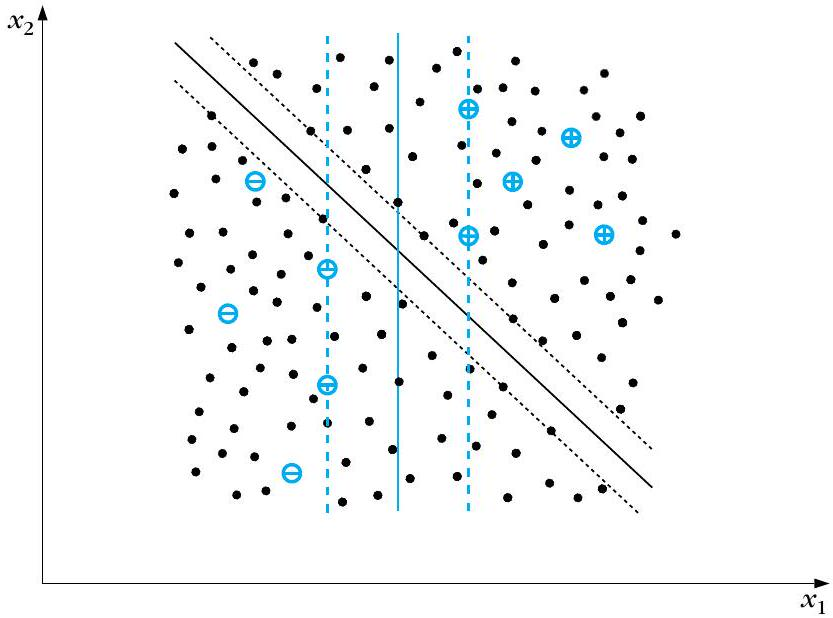
Hard／soft margin TSVM 相對普通 SVM，最關鍵的差異是什麼？
原文圖 10.7 裡，把未標籤納入之後，TSVM 的決策超平面相對普通 SVM 會怎麼變？
self-training、co-training，以及半監督何時會變差
▼🤖 AI 生圖可用：重繪此示意圖的提示詞（結構化）
WHAT: 製作一張左右對照的 SVG 教育示意圖（無公式）。左欄：資料呈兩個清楚分離的團塊（紅＋、藍－），中間有低密度稀疏帶；標籤點實心、未標籤空心散布各團與縫隙；TSVM 決策超平面（實線）落在稀疏帶，並以淡色虛線標示「只用標籤的 SVM」作對照；角標「✓ 成功」。右欄：相同紅藍兩類點沿彎曲流形（虛線弧）分布，卻仍用垂直切叢集的演算法，決策面（紅虛線）切過高密度區，標記誤判 ×；角標「✗ 失敗」。頂部主標：「假設對上資料 → 加分／假設錯了 → 可能變差」。 WHY: kp15 核心警告是半監督不是穩贏：方法必須匹配資料幾何（群集 vs 流形）。左圖讓讀者看到 TSVM／群集假設在對的資料上把決策面推進稀疏區；右圖讓讀者看到假設錯配時，未標籤不但不能加分，還可能把錯誤切法固定下來。反直覺：未標籤不是免費午餐。 MUST show: 左右兩欄對比；左：兩團＋稀疏帶＋TSVM 決策面＋成功徽章；右：流形弧線＋錯誤垂直切線＋誤判 ×＋失敗徽章；實心／空心點圖例；中文標題與各欄說明；底部「未標籤多 ≠ 一定更好」；禁止出現任何數學公式。 AVOID: 不要寫 LaTeX 或式號；不要只有文字沒有幾何；不要左右兩欄視覺完全相同；不要暗示 TSVM 永遠優於 SVM；不要改 index.html、integrate 或 commit。 STYLE: 純 SVG，viewBox 860×480；背景 #f8fafc；卡片白底圓角；字體 Noto Sans TC / Microsoft JhengHei 系統堆疊；＋ 紅 #dc2626、－ 藍 #2563eb、成功綠 #059669、失敗紅 #dc2626；未標籤空心灰框；成功決策面實線深綠、錯誤決策面紅虛線；輕微 drop shadow。
一句話
self-training 用自己的高信心預測當新標籤、co-training 讓兩個獨立視角互教；但半監督不是穩贏——演算法跟資料假設對不上，未標籤反而可能把表現拉垮。
是什麼
除了圖正則與 TSVM，還有兩種概念很單純、也常用的半監督手法。
self-training（自我訓練）
- 先只用標籤資料訓練一個分類器；
- 拿它去標未標籤點；
- 依信心準則，把「夠有把握」的預測連同該點加進訓練集；
- 重訓，再重複。
分類器用自己的預測來訓練自己。通訊裡用了三十多年的決策回授等化（DFE, decision feedback equalization）就是同一個味道。
co-training（協同訓練）：把特徵切成若干子集（常見是兩份），每一份特徵各自訓一個分類器。兩個分類器在自己的子空間裡對未標籤做預測，然後把最有信心的那些點與預測標籤交給對方，對方拿這批新資訊重訓。拆特徵等於給資料兩個互補的「視角」；這讓人想起第 4 章在不同子空間訓分類器再組合的作法。關鍵假設是：兩個視角要夠獨立，否則你只是讓同一個偏見互相加油。
為什麼
半監督的大哉問是：什麼時候未標籤真的會比「只用標籤」更好？文獻裡兩種結局都有，而且原文講得很重：不要預設一定會進步。
- 演算法必須匹配資料：資料呈現群集結構，才適合實作群集假設的方法（例如 TSVM）；資料躺在流形上，才適合 Laplacian LS 這類流形方法。先對手上的資料有感覺，再選武器。
- 生成模型假設若錯，未標籤可能害你：§10.5.1 已強調，若類條件密度 $p(\boldsymbol{x}\mid y)$ 的模型跟真實分布不合，把未標籤加進來甚至會讓表現變差。實務上你很難保證自己猜對了底層分布。
正面例子：文本分類裡，標籤文件很少、再加約 10,000 篇未標籤文章，生成式半監督可以明顯拉高正確率；標籤從幾十增到幾千之後，半監督與純監督的正確率會逐漸靠攏。基因的 promoter 序列辨識上，TSVM 也贏過歸納式 SVM。
反面例子：預測蛋白質功能時，SVM 的表現明顯優於 TSVM。這跟前面的警告對得上——沒有保證。
怎麼用 / 怎麼記
口訣：「自己教自己是 self，兩個視角互教是 co；假設對了才加分，假設錯了未標籤會倒車。」
選方法前先問資料像哪一種幾何：有清楚的團就考慮 TSVM，有流形鄰居結構就考慮 Laplacian；兩個獨立視角才玩 co-training。生成模型更要先檢查類條件密度像不像你寫的那個式子。
附帶一句：Vapnik 還提過 Universum——額外一批「不屬於任一目標類」的點（分布也可以跟標籤資料不同）。它是一種資料相依正則：訓練時逼決策函數在這些點取小值，也就是把它們按到決策面附近。
關於半監督學習，下列哪句最符合原文的關鍵警告？
self-training 與 co-training 的操作差異，下列哪項正確？